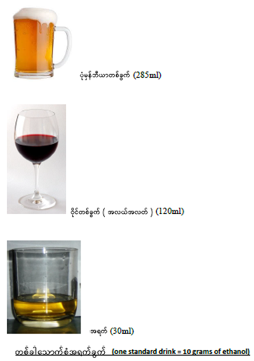

အရက်သောက်သုံးခြင်းဆိုင်ရာ အကြံပေးချက်
အရက်အလွန်အကျွံသောက်ခြင်းသည် ကျန်းမာရေးကို ထိခိုက်စေနိုင်သည့်အန္တရာယ်များစွာကို ချက်ချင်းမြင့်တက်စေပါသည်။အရက်အလွန်အကျွံသောက်ခြင်းသည် နာတာရှည်ရောဂါများ၊ ကင်ဆာများ၊ သင်ယူမှုနှင့် မှတ်ဉာဏ်ပြဿနာများ၊ စိတ်ကျန်းမာရေးပြဿနာများ၊ လူမှုရေးပြဿနာများ၊ အစရှိသည့် ပြင်းထန်သောပြဿနာများ ဖြစ်ပေါ်လာနိုင်သည်။

- အရက်သေစာသောက်စားသူများ အနေဖြင့် အရက်သောက်ခြင်းကို ရှောင်ကြဥ်သင့်သည်။
- ကျန်းမာရေးအတွက် အကြောင်းပြချက်ဖြင့် အရက်မသောက်သင့်ပါ။
- တစ်နေ့လျှင် အရက်(၂) ခွက်အထက်သောက်သော အမျိုးသားများနှင့် တစ်နေ့လျှင် (၁) ခွက်အထက်သောက်သော အမျိုးသမီးများအနေဖြင့် အရက်ကိုလျှေ့ချသောက်သုံးသင့်ပါသည်။ တစ်ခါသောက် အယ်လ်ကိုဟောပါဝင်မှု အတိုင်းအတာများ - ဘီယာ ခွက်တစ်ဝက် (အယ်လ်ကိုဟော ၅ ရာခိုင်နှုန်း), ဝိုင် ၁၀၀ ml (အရက် ၁၀ ရာခိုင်နှုန်း), spirits ၂၅ ml (အရက် ၄၀ ရာခိုင်နှုန်း)
- မိမိတွင် နောက်ဆက်တွဲအန္တရာယ်များ ရှိနေပါက အရက်ကို လုံးဝမသောက်သင့်ပါ။ ဥပမာ-ကားမောင်းခြင်း သို့မဟုတ် စက်ယန္တရားများ မောင်းနှင်ခြင်း၊ ကိုယ်ဝန်ဆောင် သို့မဟုတ် မိခင်နို့တိုက်ကျွေးခြင်း၊ ဆေးဝါးများသောက်သုံးနေခြင်း စသည်တို့ဖြစ်ပါသည်။
- အရက်သောက်ခြင်းကြောင့် ပိုမိုဆိုးလာနိုင်သော ကျန်းမာရေးပြဿနာများ ဖြစ်သည့် အသည်းမကောင်းခြင်း၊ စိတ်ကျန်းမာရေးပြဿနာများ၊ အစာအိမ်နာစသည်တို့ ခံစားနေရပါက အရက်မသောက်သင့်ပါ။
- အရက်ကို အတိုင်းအတာ ဖြင့် ထိန်းချုပ်ပြီး မသောက်နိုင်လျှင် လုံးဝ အရက်မသောက်သင့်ပါ။